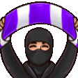
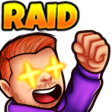
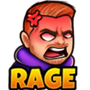
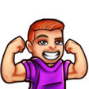
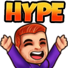
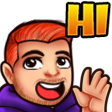
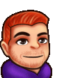

Hier endet der Stream nicht.
Discord, Socials, gemeinsame Abende und jede Menge Insider — ZveenTV lebt auch dann weiter, wenn Twitch gerade offline ist.
Dein Platz in der ZveenTV Community.
Stream-Ankündigungen, Gespräche, spontane Aktionen und Leute, mit denen man gerne den Abend verbringt. Ohne unnötiges Drumherum.
Discord beitreten →Folgen, reinschauen, dabei sein.
Jede Plattform hat ihren Zweck — der gemeinsame Nenner bleibt ZveenTV.
Twitch
Live-Gaming, Gespräche und genau das Chaos, für das du gekommen bist.
Live zuschauen →DDiscord
Ankündigungen, Austausch und der Treffpunkt zwischen den Streams.
Server beitreten →YYouTube
Highlights und Inhalte zum Nachschauen, wenn der Stream vorbei ist.
Kanal öffnen →IEinblicke, Updates und ein bisschen ZveenTV abseits des Live-Buttons.
Folgen →TTTikTok
Kurze Momente, Highlights und Chaos im Hochformat.
Ansehen →ZveenTV Emotes
Die Reaktionen, die im Chat manchmal mehr sagen als eine ganze Nachricht.












